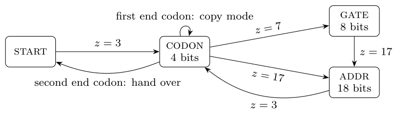
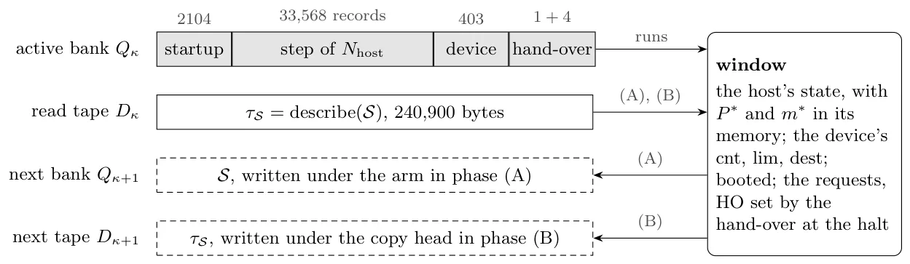
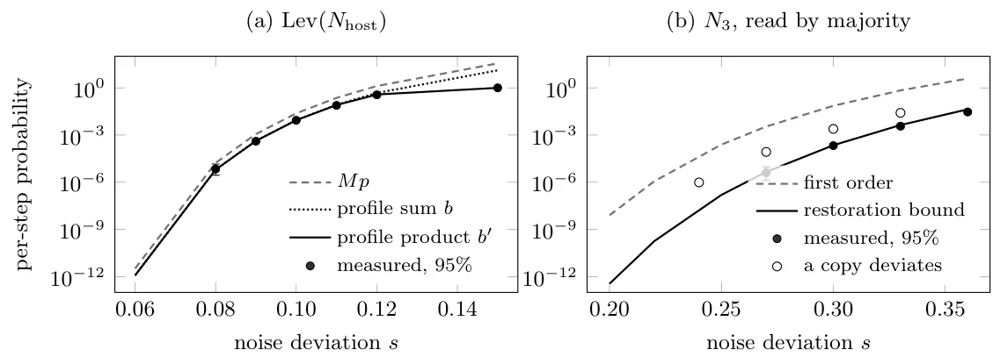

O problema: máquinas que copiam a si mesmas
McCulloch e Pitts inventaram redes de unidades threshold binárias nos anos 1940 como um cálculo lógico da atividade neural. Von Neumann usou essa notação para projetar o computador de programa armazenado e, mais tarde, perguntou: como uma máquina pode construir uma cópia de si mesma? Ele respondeu com um construtor universal — uma máquina que, dada a descrição de outra máquina, constrói essa máquina; e, alimentada com sua própria descrição e um mecanismo de cópia, constrói uma cópia de si mesma junto com a descrição.
Os autômatos auto-reprodutores que se seguiram — todos eles autômatos celulares — reproduzem configurações de um espaço celular sob uma regra de transição fixa. A regra não muda; o que se reproduz é a configuração. Este paper faz a mesma pergunta para redes de threshold: os pesos de uma rede neural podem ser reproduzidos exatamente pela dinâmica de outra rede neural?
A resposta é sim, e a chave está nos inteiros. Uma rede treinada que emite uma aproximação de seus pesos perde informação a cada geração. Mas uma órbita de pré-ativações inteiras carrega um conjunto de pesos bit a bit e sobrevive a qualquer perturbação de uma pré-ativação abaixo de meio. Este trabalho constrói uma rede ternária fixa — pesos em {-1, 0, 1} e thresholds inteiros — que mantém outras redes como dados e as executa.
A arquitetura: um anel de bancos de registros
A ideia central é separar a rede que executa da rede que é executada. A rede fixa tem uma estrutura de estado especial: um anel de K bancos de registros, cada banco com S registros e uma fita de L células. Um registro representa uma unidade de threshold de duas entradas de uma rede armazenada. A cada passo, a rede fixa avalia um registro do banco ativo.
A rede fixa é como a regra de transição de um autômato celular: ela mantém seus pesos fixos. O que se reproduz é a rede armazenada — seus pesos e biases incluídos. A netlist fixa tem profundidade 19 e é ternária: cada peso é -1, 0 ou +1. O paper prova (Teorema 3.2) que essa netlist de profundidade 19 computa o passo seguinte a partir de qualquer estado, para qualquer escolha de janela, anel, banco e fita.
Uma passagem completa sobre um banco avalia a netlist armazenada nele. Cada unidade ternária pode ser compilada em registros (Lemas 3.3 e 3.4). Isso significa que qualquer rede ternária pode ser armazenada e executada pela máquina em anel.

O organismo: 143 registros que se reproduzem
O paper constrói um 'organismo' de 143 registros que implementa o esquema de von Neumann: um construtor universal que lê a descrição de uma rede de sua fita, constrói essa rede no próximo banco, copia a descrição para a próxima fita e passa o controle para o que construiu.
Quando esse organismo é iniciado com sua própria descrição, ele se reproduz. As cópias se acumulam até que cada banco contenha uma, e a partir daí o estado se repete a cada K gerações (Teoremas 4.5 e 4.6). O organismo reconstrói a si mesmo — pesos incluídos — em cada geração, sem perda de informação.
O decodificador do organismo funciona em fases. Ele lê a descrição da rede bit a bit, decodifica cada 'codon' (uma unidade de código) e escreve cada registro sob o braço de construção. Um modo de cópia duplica a descrição para a próxima fita. A separação entre construção e cópia é exatamente a de von Neumann.

Computador universal: SUBLEQ em profundidade 13
O paper escala a construção para um computador universal. SUBLEQ é um computador de instrução única: cada instrução subtrai o conteúdo de um endereço de outro, armazena o resultado e salta se o resultado for menor ou igual a zero. É Turing-completo.
O paper constrói uma família HA de redes ternárias que executam SUBLEQ em 2^A palavras de A bits. O passo tem profundidade 13 em qualquer largura de palavra. O membro com palavras de oito bits tem 17.598 unidades (Proposição 5.9). Uma leitura e o branch precisam cada um de dois níveis de unidades ternárias (Lema 5.7, Observação 5.5).
Um programa de 21 instruções constrói qualquer string de bytes a partir de uma descrição run-length dela. Um programa de 27 instruções — que separa construção de cópia como von Neumann fez — faz o host emitir a serialização de si mesmo, sua memória e sua fita (Teoremas 6.9 e 6.12). Isso é o esquema de quine em uma máquina universal: um mapa que imprime seu próprio código.

Robustez a ruído: margens exatas
O paper analisa dois tipos de ruído. Primeiro, perturbações nas pré-ativações: enquanto nenhuma perturbação atingir 1/2, a órbita permanece exata. Replicar cada unidade r vezes multiplica essa margem por r, protegendo contra ruído de qualquer magnitude.
Segundo, flips de saída: o tipo de ruído que von Neumann considerou, onde a saída de uma unidade é invertida com certa probabilidade. Aqui a proteção é limitada. A probabilidade de erro cresce com o fan-in: o limiar de ruído tolerável é inversamente proporcional ao número de entradas.
O paper prova esses resultados em Rocq (antigo Coq), um assistente de provas. Isso significa que as garantias de correção e robustez são formalmente verificadas, não apenas argumentadas. Os tamanhos exatos e as profundidades são dados para cada parâmetro.

O que não é reproduzido
A rede fixa em si não é reproduzida. Sua netlist é ternária e compila em registros pelo Lema 3.4, mas seu estado — que contém a janela, os bancos e as fitas — não cabe em sua própria janela. Uma rede que também reconstrói a rede que a executa precisa de outra construção.
Isso é uma limitação fundamental do esquema. A auto-reprodução acontece no nível da rede armazenada, não da rede fixa. É análogo a um autômato celular: a regra de transição não se reproduz; o que se reproduz é a configuração. Aqui, a netlist fixa é a regra, e a rede armazenada é a configuração.
Questões em aberto
O paper deixa várias questões abertas. Primeira: se um passo ternário de SUBLEQ pode ter profundidade abaixo de 11, já que o Lema 5.7 e a Observação 5.5 limitam apenas uma leitura e o branch. Segunda: quantos registros uma rede armazenada auto-reprodutora precisa no mínimo. O organismo atual tem 143; há um limite inferior?
Terceira, e talvez a mais importante: quanto ruído uma execução reprodutora tolera quando as perturbações são correlacionadas ou derivam. A análise da Seção 8 assume independência, o que exclui esses casos. Na prática, ruído correlacionado e deriva são comuns, e a robustez real pode ser menor do que os limites provados sugerem.
O paper também não explora variantes da arquitetura. A máquina em anel é uma escolha, não a única possível. Estruturas de dados diferentes — pilhas, árvores, grafos — poderiam permitir auto-reprodução com propriedades diferentes, talvez com menos registros ou maior robustez a certos tipos de ruído.
Por que isso importa
Este trabalho conecta três tradições: redes neurais, teoria da computação e auto-reprodução. Ele mostra que redes de threshold — o modelo clássico de McCulloch e Pitts — podem implementar o esquema de von Neumann de forma exata, sem perda de informação entre gerações.
A exatidão vem dos inteiros. Redes treinadas com pesos reais perdem informação a cada geração. Redes ternárias com pré-ativações inteiras carregam pesos bit a bit. Isso não é apenas uma curiosidade teórica: é uma propriedade que pode ser explorada em hardware resistente a ruído ou em sistemas que precisam de garantias formais de correção.
O paper também demonstra que pesos ternários não são uma limitação severa. Uma rede ternária de profundidade 13 executa um computador universal. Uma de profundidade 19 executa outras redes. Isso sugere que a quantização extrema — pesos em {-1, 0, 1} — é mais poderosa do que se poderia esperar, especialmente quando combinada com aritmética inteira e profundidade adequada.
O que fica
- Uma rede neural ternária fixa pode armazenar outras redes em seu estado e executá-las; um 'organismo' de 143 registros reconstrói a si mesmo — pesos incluídos — em cada geração, sem perda.
- Um computador universal SUBLEQ de 17.598 unidades ternárias opera em profundidade 13 e pode emitir a serialização completa de si mesmo, implementando o esquema de quine de von Neumann.
- Pré-ativações inteiras dão margem de 1/2 contra ruído: replicar cada unidade r vezes multiplica a margem por r, protegendo contra perturbações de qualquer magnitude (mas não contra flips de saída acima de um limiar).
- A rede fixa não se reproduz — apenas a rede armazenada o faz. Questões abertas: profundidade mínima de SUBLEQ, número mínimo de registros e robustez a ruído correlacionado ou com deriva.
Paper original: Universal Construction and Exact Self-Reproduction in Ternary McCulloch-Pitts Networks
Comentários
Nenhum comentário ainda. Seja o primeiro.